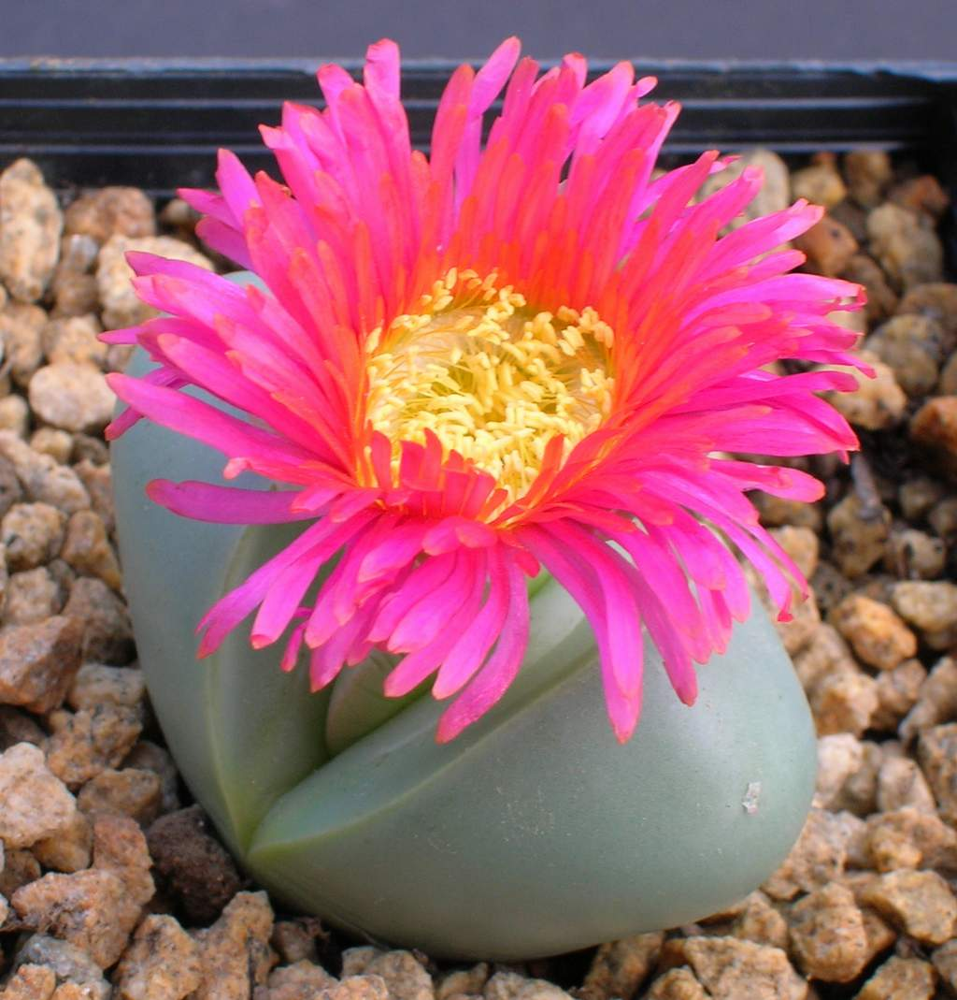
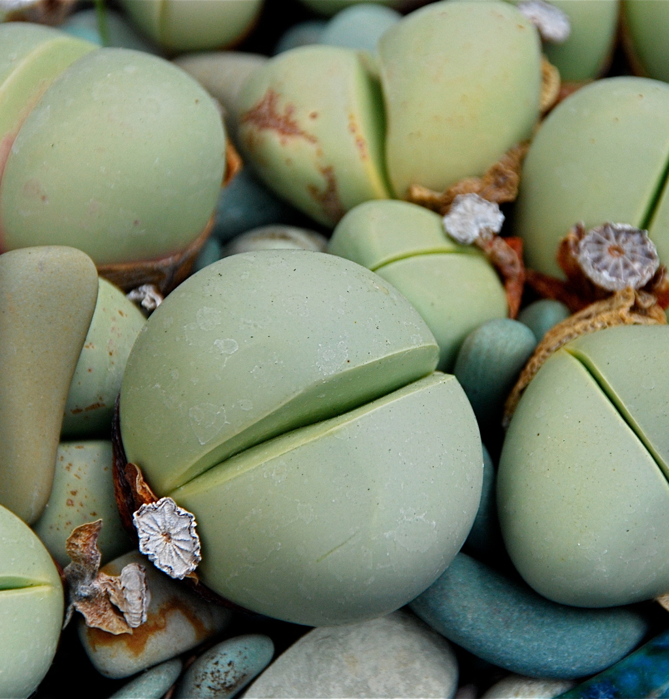
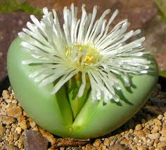
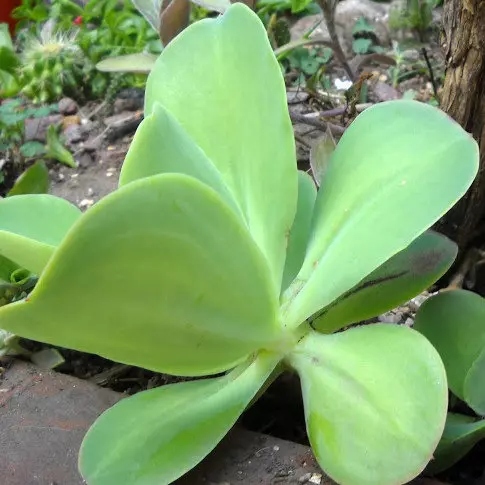
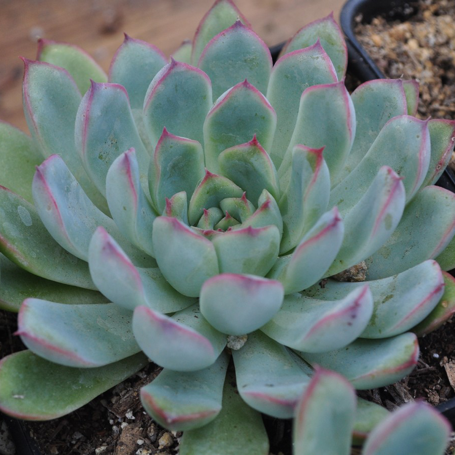
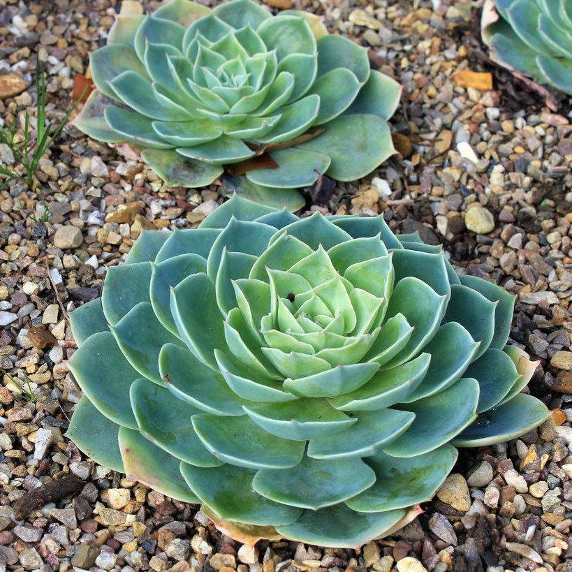
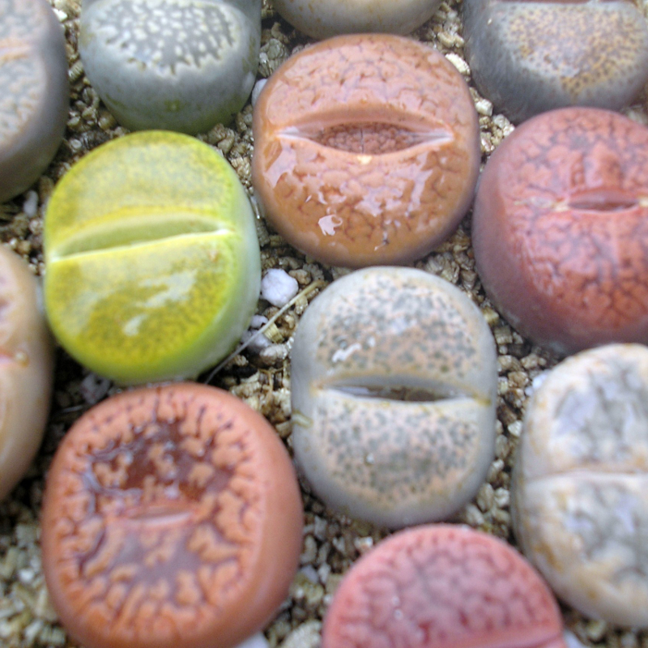
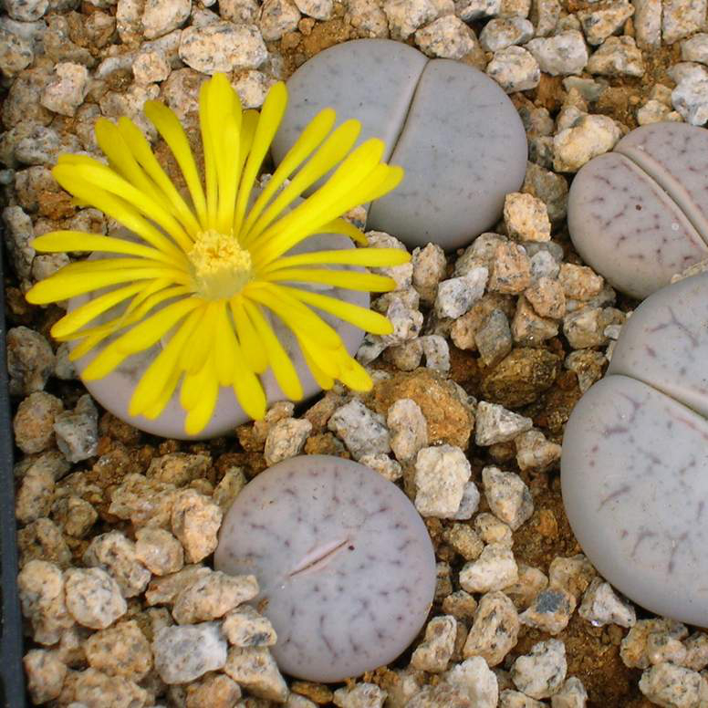
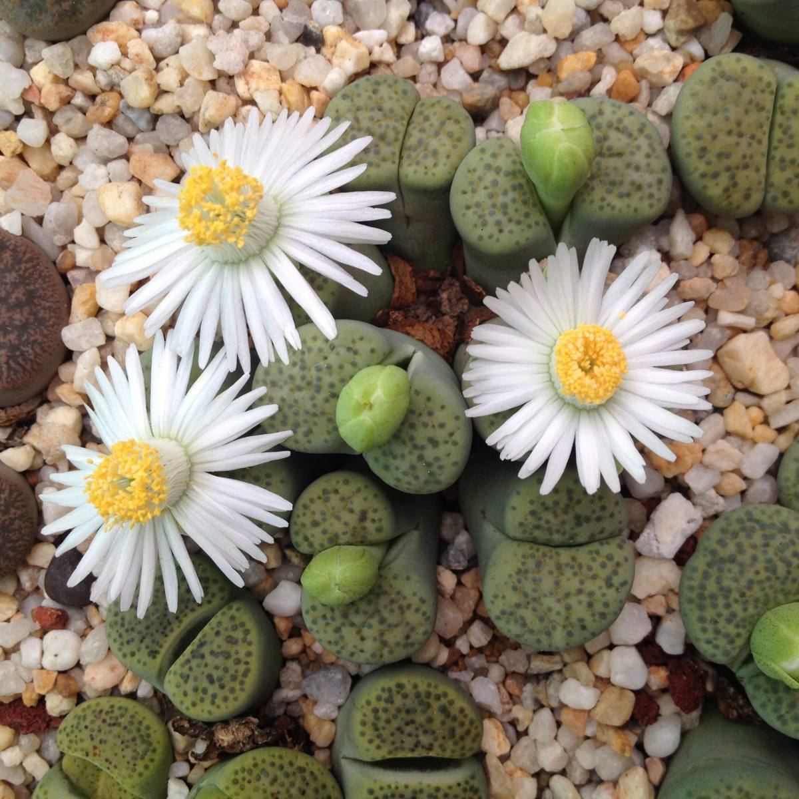

Probablemente una de las más peculiares, por su forma similar a un huevo partido a la mitad. Con un color entre plateado, verde y azul y unas flores rojas y rosas muy vistosas, las ARGYRODERMA son una elección muy interesante para el interior, sobre todo en el norte, ya que durante el invierno tendremos que reducir mucho el riego. Una de las curiosidades de esta planta es que florece precisamente en invierno, aportando color a nuestra casa. Necesita mucho sol y temperaturas por encima de los 8ºC, aunque puede soportar alguna helada suave.



ECHEVERIA;
Este género incluye muchas especies diversas con formas y colores distintos. Desde la Echeveria Pulidonis, con forma de rosetón, hasta la Echeveria ‘Set Oliver’, más alta y ramificada, con toda seguridad hay alguna que se adapte a tus gustos.
A algunas variedades se las conoce también como ‘plantas peluche’, ya que sus hojas están cubiertas de un vello muy denso. Una de las variedades más hemosas y apreciadas es la Echeveria Elegans.


LITHOPS
También conocidas como plantas piedra, son con toda seguridad unas de las suculentas más peculiares. Tienen un tamaño muy reducido y el aspecto se asemeja tanto a una piedra que si no están en flor es difícil verlas. Sus flores, blancas o amarillas, son grandes y llegan a tapar casi por completo la planta. Es recomendable mantenerlas a una temperatura de entre 15ºC y 30ºC, por lo que en el norte de España y en zonas frías es más apta como planta de interior. Asegúrate de que recibe suficiente luz del sol.



| PAG. | |||
|---|---|---|---|
| 0 | INTRODUCCION | ||
| 1 | Argyroderma | Echeveria | Lithops |
| 2 | Sempervivum | Haworthia | Cactáceas |
| 3 | Aeonium | Agave | Aloe |
| 4 | Graptopetalum | Orostachys | Pleiospilos |